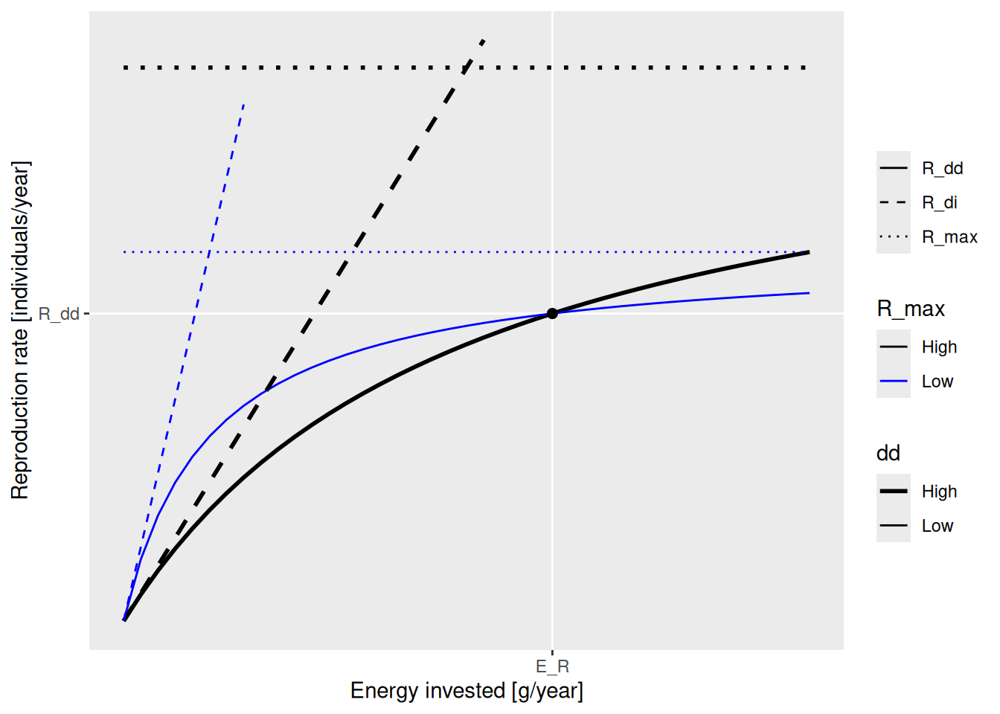
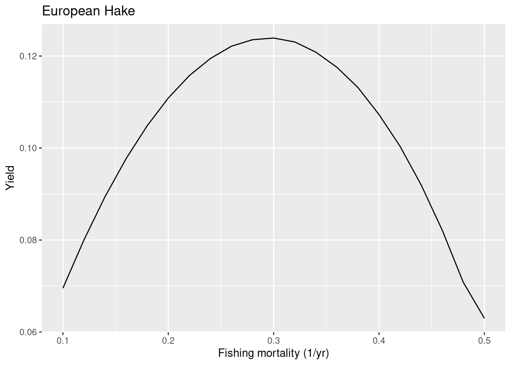

Tune resilience
In the previous tutorials we tuned our model parameters so that the steady state of the model agrees with observed growth rates, average observed biomasses and average observed catches. We did not yet tune how sensitively our model reacts to changes away from its steady state. In particular, we did not tune how resilient the species are to fishing. We will do that in this tutorial.
Note that your latest version of the model will differ from ours, so the plots you obtain by following this tutorial will differ from those displayed on this webpage. By noting these differences you will get a first feel for how sensitive a mizer model is to the choice of parameters. You can download the model that produced the results on this page with
download.file("https://github.com/gustavdelius/mizerCourse/raw/master/build/cel_model_landings.rds",
destfile = "cel_model_landings.rds")We load the model into the variable cel_model.
cel_model <- readParams("../build/cel_model_landings.rds")Reproduction dynamics
In this tutorial we will look at an aspect of the model that has a big impact on the resilience of species to perturbations: the reproduction dynamics. In the tutorial on dynamics of size spectra in Part 1 we briefly looked at how density dependence of reproduction can influence how species react to changes in mortality, such as from fishing. It might be good if you go back to that tutorial and remind yourself.
When we built our model in previous tutorials we were not concerned about the parameters that specify the reproduction dynamics. We were only concerned with setting the resulting reproduction rate for each species to the levels that produced the observed species biomasses. But because the parameters for the reproduction dynamics will affect how resilient species are, we will choose appropriate values for them in this tutorial.
In usual fisheries models, the reproduction dynamics is captured in the stock-recruitment relationship which relates the number of new recruits to the spawning stock biomass. Recruits are the fish that survive up to a size where they enter the fishery, which is the size at which the fisheries model starts modelling them.
Mizer is different in that it tracks individuals from the size at which they hatch (egg size) all the way to adult sizes. Therefore much of the density dependence that is usually encoded in stock-recruitment relationships is modelled explicitly in mizer through the growth and mortality that larvae and juveniles experience until they reach recruitment size. So in mizer we specify the reproduction rate (the rate at which individuals enter the smallest size class) instead of the recruitment rate.
There are many density-dependent effects that mizer does not capture explicitly, like for example limits on the available spawning grounds. This additional density dependence is encoded in a non-linear relationship between the energy that a species invests into reproduction and the rate at which new individuals enter the smallest size class in the model, as we will now discuss.
There are several quantities that were introduced in that earlier tutorial that we would like to recall now:
The rate E_R at which a species invests energy into reproduction. We discussed how this depends on the species parameters in a section of the tutorial on single species spectra in Part 1 of the course. In standard fisheries models the energy invested is assumed to be proportional to the spawning stock biomass. In mizer the energy invested also depends on how much food is available for the spawning stock. But nevertheless you won’t go wrong too much if in your head you think of E_R as being proportional to the spawning stock biomass.
The parameter
ereprothat describes the efficiency with which the energy that a species invests into reproduction is converted to eggs. Multiplying E_R byereproand by the conversion factor from biomass to number of eggs gives the quantity that we called R_{di}: the rate of egg production. We also sometimes refer to R_{di} as the “density-independent reproduction rate”. The efficiencyereprocan be quite small because a lot of the energy expended on reproduction goes not into the production of eggs but into associated processes, like for example migration to the spawning grounds.The rate R_{dd} at which new individuals can enter the smallest size class in the model (usually this represents the hatching of eggs). This depends in a non-linear way on the rate R_{di} of egg production and therefore also non-linearly on the rate at E_R at which the species invests energy into reproduction. We therefore sometimes refer to this as the “density-dependent reproduction rate”.
The parameter
R_maxthat gives the maximum rate at which individuals can join the smallest size class, no matter how much energy the species invests.
These concepts are nicely illustrated by the following figure that you saw earlier:

The black dot in the diagram represents the steady-state values for E_R and R_{dd}. The solid curves represents how the density-dependent reproduction rate R_{dd} depends on the rate E_R. Both the solid blue line and the solid black line go through the black dot, which means that they result in the same steady-state reproduction. They differ by the choice of the maximum reproduction rate R_max (the height of the dotted line) and the reproductive efficiency erepro (the slope of the dashed line representing R_{di}).
We can see in the diagram how, as E_R is changed, for example through a depletion of spawning stock biomass due to fishing, the resulting change in the reproduction rate R_{dd} is more pronounced along the solid black curve than along the blue curve. This is why an increase in R_{max} will make the species less resilient to fishing.
Note how both R_max and erepro need to be changed at the same time in order for the resulting curve for the reproduction rate to still go through the black dot, i.e., in order not to change the reproduction rate in the steady state. As we discussed earlier, the function setBevertonHolt() automatically changes both parameters together in the correct manner. In that function we can specify the desired reproduction curve by specifying either R_max or erepro or the ratio between R_{dd} at steady state and R_{max}, which we refer to as the reproduction level.
We like to work with the reproduction level because it is a number between 0 and 1, where 0 means that the rate of reproduction increases in proportion to E_R and 1 means that the rate of reproduction is independent of E_R. The higher the value of the reproduction level the less impact a change in E_R will have on the species’ reproduction. Thus higher levels of the reproduction level make the species more resilient for example to fishing.
How resilient should species be?
We will need to tune the reproduction level of each species to make sure that their response to fishing is reasonable. How do we know what is reasonable? It is not a straightforward question.
For our Celtic Sea model we will use the FMSY values from the ICES fisheries advice. We will try to set the reproduction levels so that so that the species give the maximum sustainable yield at the published FMSY values. However what would you do if such values from fisheries advice are not available?
You could start by consulting general fisheries models. You can read about the principles of basic fisheries surplus production models in this excellent book by Malcolm Haddon “Using R for Modelling and Quantitative Methods in Fisheries”.
In the simplest of these models, the population dynamics are specified in terms of a maximum population growth rate r (not to be confused with the maximum hatching rate R_max used in mizer) and a carrying capacity, which represents the unfished biomass level. Under these simplest standard assumptions about density dependence, maximum sustainable yield (MSY) is obtained when the stock is at 50% of the unfished biomass level. MSY is approximately r/4 \cdot unfished biomass and the fishing mortality which gives this MSY is r/2. This fishing mortality is referred to as F_{MSY}. This means that if for example r = 0.5 then the peak of the yield curve should be at about F_{MSY} = 0.25. If unfished biomass is 1000 tons, MSY will be at 125 tons.
We usually do not know population growth rates r for our species, but we can look up estimates in the FishBase life-history tool section. Or we can use generic estimates which suggest r of 0.6-1.5 for high resilience species (Von Bertalanffy growth rate K>0.3, maturation age < 1, high fecundity) and r of 0.2-1 for medium resilience species. We reproduce the table from this reference here:
These values are derived from single species models with very different assumptions to those of ours, so they can only be used as very general guides.
If you do not have other information, you could tune your model so that the species give the maximum sustainable yield at the fishing mortalities that are in the range suggested by the table above, i.e. so that F_{MSY} = r/2 with r in the range given in the last row of that table. We are not saying that this is the only or best method.
Alternatively, you can use Ken Andersen’s book and expectations for species with different asymptotic sizes, as estimated from trait-based models (where all species parameters are determined in terms of the asymptotic size) and when all species are fished with 50% selectivity at 5% of their asymptotic size. The panels below represents species with different asymptotic sizes: 333 g (top), 10 g (bottom left), and 10 kg (bottom right). The lines show yield (solid black lines), yield per recruit (dashed lines), spawning stock biomass (dark gray lines), and recruitment (light gray lines), all scaled by their maximum value. We will not deal with yield per recruit, so ignore the dashed lines. This figure shows that highest yields are expected at fishing mortality of about 0.3-0.5/year.
Constant reproductive efficiency
The reproduction parameters in our model are currently rather random:
getReproductionLevel(cel_model) Herring Sprat Cod Haddock Whiting
0.9734878 0.9966888 0.9971724 0.7569318 0.9538825
Blue whiting Norway Pout Poor Cod European Hake Monkfish
0.9892638 0.9798886 0.9950881 0.9990410 0.9883076
Horse Mackerel Mackerel Common Dab Plaice Megrim
0.9944085 0.9681944 0.9952773 0.9913926 0.9983078
Sole Boarfish
0.8862835 0.9999991 We will tune them to achieve the desired value for FMSY.
We need to decide what reproduction parameters we should set to start our tuning. We will follow the approach of Jacobsen et al. 2016 and initially set the reproductive efficiency erepro to the same value for all species.
We use the setBevertonHolt() function to set the values for erepro. That function automatically also adjusts the values for R_max to keep the steady state reproduction rate R_{dd} the same, as we discussed above.
If we try to set the value for erepro very low, the setBevertonHolt() function will issue a warning:
cel_model <- setBevertonHolt(cel_model, erepro = 0.0001)Warning in setBevertonHolt(cel_model, erepro = 1e-04): For the following species `erepro` has been increased to the smallest possible value: erepro[Herring] = 0.000647; erepro[Sprat] = 0.000814; erepro[Blue whiting] = 0.000265; erepro[Norway Pout] = 0.000704; erepro[Poor Cod] = 0.000359; erepro[Horse Mackerel] = 0.000303; erepro[Common Dab] = 0.000173; erepro[Megrim] = 0.000218; erepro[Boarfish] = 0.00076Because we want all species to have the same value, we choose a value that is larger than those required. So we choose erepro = 0.001.
cel_model <- setBevertonHolt(cel_model, erepro = 0.001)
species_params(cel_model) |> select(erepro, R_max)Let’s see what reproduction levels this gives:
getReproductionLevel(cel_model) Herring Sprat Cod Haddock Whiting
0.3530674 0.1860801 0.9504024 0.9904808 0.9872004
Blue whiting Norway Pout Poor Cod European Hake Monkfish
0.7354517 0.2958390 0.6414372 0.9444962 0.9921768
Horse Mackerel Mackerel Common Dab Plaice Megrim
0.6966567 0.9518501 0.8274521 0.9578539 0.7824624
Sole Boarfish
0.9905045 0.2395725 It is quite typical that large slow-growing species have a higher reproduction level than smaller fast-growing species.
Remember: the reproduction level is the ratio between RDD and R_max and can vary between 0 and 1. It tells us how close the actual reproduction (after applying density dependence) is to the theoretical maximum, set by R_max. So instead of using the getReproductionLevel() function we could also have done the calculation ourselves:
getRDD(cel_model) / species_params(cel_model)$R_max Herring Sprat Cod Haddock Whiting
0.3530674 0.1860801 0.9504024 0.9904808 0.9872004
Blue whiting Norway Pout Poor Cod European Hake Monkfish
0.7354517 0.2958390 0.6414372 0.9444962 0.9921768
Horse Mackerel Mackerel Common Dab Plaice Megrim
0.6966567 0.9518501 0.8274521 0.9578539 0.7824624
Sole Boarfish
0.9905045 0.2395725 We can also look how close the density dependent reproduction rate RDD is to the density independent reproduction rate RDI:
Herring Sprat Cod Haddock Whiting
1.545756 1.228622 20.162286 105.050457 78.127562
Blue whiting Norway Pout Poor Cod European Hake Monkfish
3.780028 1.420130 2.788912 18.016799 127.825441
Horse Mackerel Mackerel Common Dab Plaice Megrim
3.296595 20.768462 5.795492 23.726971 4.596906
Sole Boarfish
105.313110 1.315050 This tells us that many species can produce large amounts of eggs, but the actual reproduction is strongly capped by the R_max parameter.
Tuning reproduction level
We now want to adjust the reproduction levels so that the resilience of the species in our model matches expectations.
Exploring yield curves
To measure the resilience of our species to fishing, we will change the fishing mortality for one species at a time and check how their yields change in response. We keep the fishing mortality for the other species fixed. For our selected species we run through a range of fishing mortalities. For each fishing mortality we run the projection until the system has settled down to a new steady state. Then we calculates the yield in that steady state. After doing that for all fishing mortalities we can plot all the results in a graph showing yield on the y axis versus fishing mortality F on the x axis. The plotYieldVsF() function does all that for us. Here we plot the yield curve for haddock:
plotYieldVsF(cel_model, species = "Haddock",
F_range = seq(0.1, 0.9, 0.02))We refer to the yield achieved in the steady state as the sustainable yield (SY) because it can be sustained indefinitely. The sustainable yield for this species has a maximum (MSY) at a fishing mortality of about 0.3. We refer to this value as FMSY. This is close enough to the value of 0.35 that is given for FMSY in the ICES advice for our haddock stock.
Next we look at hake, for which the ICES advice gives a value for FMSY of only 0.26.
plotYieldVsF(cel_model, species = "European Hake",
F_range = seq(0.1, 0.5, 0.02))We read off that for hake the current value of FMSY in the model is too high. In other words, it is not sensitive enough to fishing. We have probably put on too much extra density dependence on the reproduction. Let us look at the reproduction level we have currently chosen:
getReproductionLevel(cel_model)["European Hake"]European Hake
0.9444962 Let us see what the yield curve would look like when we only include the density depencence in recruitment that is automatically included in the mizer model and do not add anything extra. So we set the reproduction level to 0.
# First we save current reproduction level into a vector
rep_level <- getReproductionLevel(cel_model)
# then we replace our species' reproduction level with a new value
rep_level["European Hake"] <- 0
# and assign it back to the model
cel_model <- setBevertonHolt(cel_model,
reproduction_level = rep_level)
# and plot F curves again
plotYieldVsF(cel_model, species = "European Hake",
F_range = seq(0.1, 0.5, 0.02))
The FMSY is now closer to the one in the ICES advice. Next we look at whiting where the ICES advice suggests a quite high FMSY of 0.52.
plotYieldVsF(cel_model, species = "Whiting",
F_range = seq(0.2, 0.8, 0.02))So in this case the model FMSY is lower than the ICES one, so whiting in the model is less resilient to fishing than ICES estimated. To make whiting more resilient in the model we can put more density dependence on the reproduction. Let’s put the reproduction level very close to 1, which means that the reproduction rate is almost totally independent of the investment into reproduction.
rep_level["Whiting"] <- 0.999
cel_model <- setBevertonHolt(cel_model,
reproduction_level = rep_level)
plotYieldVsF(cel_model, species = "Whiting",
F_range = seq(0.2, 0.8, 0.02))We see that even with this extreme choice the FMSY in the model is smaller than the one estimated by ICES. This shows the limitation with the approach of trying to make the predictions from the mizer model agree with the predictions by ICES which uses single-species models. At some point we will need to start trusting the multi-species model. Ideally we would tune the mizer model to actual observational data rather than to the output of single-species stock assessment models. We should use mizer as the actual stock assessment model. Unfortunately, this will require more development because currently mizer is not yet stochastic, so can not model the flucutations in the real-world data. But stay tuned …
One minor point: if you are wondering why the above yield curve is not smooth but has that kink around F=0.45. That is just because the simulation did not run long enough to really capture the final steady state. The projection stops when the dynamics has settled down to within some tolerance. If we decrease the tolerance we get more precise values for the steady state yield:
plotYieldVsF(cel_model, species = "Whiting",
F_range = seq(0.2, 0.8, 0.02), tol = 0.0001)If you run the above code yourself in your worksheet, you will notice that for some fishing mortalities, plotYieldCurve() gives a warning that convergence was not reached within the 99 years for which we ran the projection. This means that we stopped the simulation before the species had settled into a new stable state for that fishing level and thus the result for this specific fishing level is only approximate. But approximate values are good enough for our purpose. Usually we find that it is the more extreme values of F where we do not get convergence.
Exercise
We leave it to you now to look at the yield curves of other species and to compare the FMSY values with those from ICES advice. You can find links to the relevant ICES reports in Table A1 at the end of the Fisheries overview for the Celtic Seas ecoregion.
Summary
Identifying an appropriate reproduction level for our model species is very important, because the reproduction level will determine a species’ resilience to fishing.
To judge whether a reproduction level is appropriate, we estimate the fishing mortality that will give maximum sustainable yield (FMSY) by looking at the maximum of the yield curve. We then compare the model FMSY to estimates of FMSY from other sources.
Even by adjusting the reproduction level we can not always get the model FMSY to match the estimates for FMSY that were obtained from single-species assessment models. That is not surprising because the resilience to fishing is a true multi-species phenomenon.